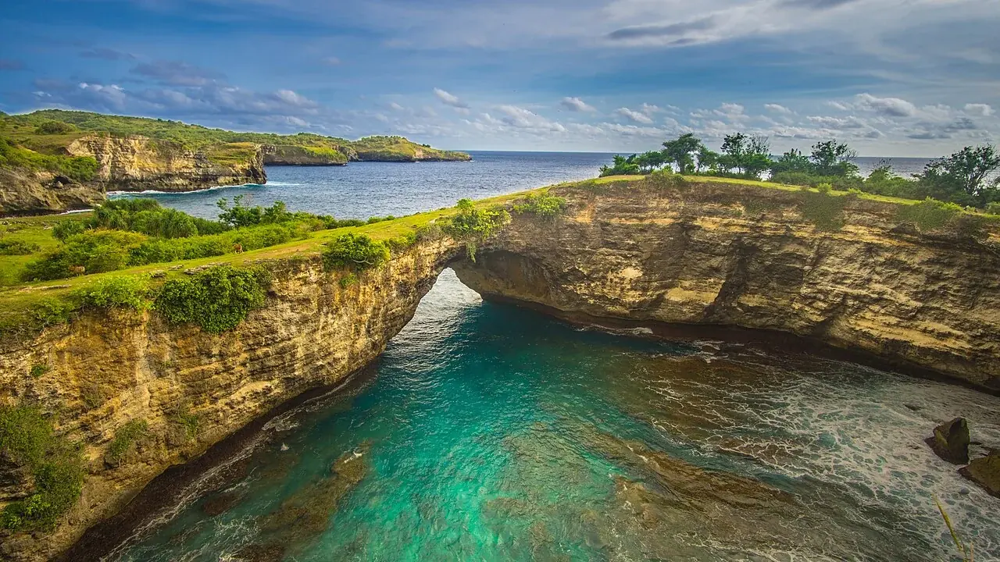

Nusa Penida
Bali, Indonésie · plongée, snorkeling

Au sud-est de Bali, Nusa Penida alterne falaises et baies. Les sites de plongée et de snorkeling se rejoignent avec les centres locaux ; la photo de Broken Beach montre le paysage côtier, pas une mise à l’eau.
- Lieu
- Bali, Indonésie
- Niveau
- Variable selon les conditions
- Activités
- plongée, snorkeling
- Type d'eau
- Mer / océan
- Coordonnées
- -8.68, 115.50 (position approximative du secteur)
Le conseil d'Ocean Buddy
Nusa Penida n’a pas de pont : on y va en bateau rapide depuis Bali (de Sanur, 30 à 45 minutes) et on réserve son billet à l’avance en période de vacances. À Kelingking, la descente vers la plage est un escalier naturel raide de 30 à 60 minutes, avec peu de barrières par endroits : la plupart des visiteurs restent au point de vue. Pour plonger ou faire du snorkeling, passe par un centre local.
Ouvrir dans Ocean Buddy Télécharger sur l'App Store
Source : Wikipédia · géographie du lieu.